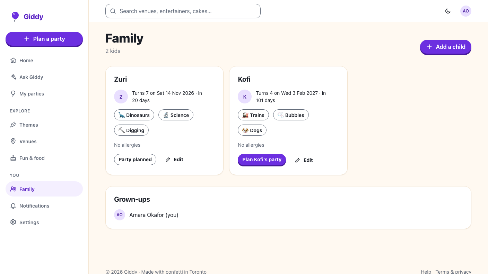
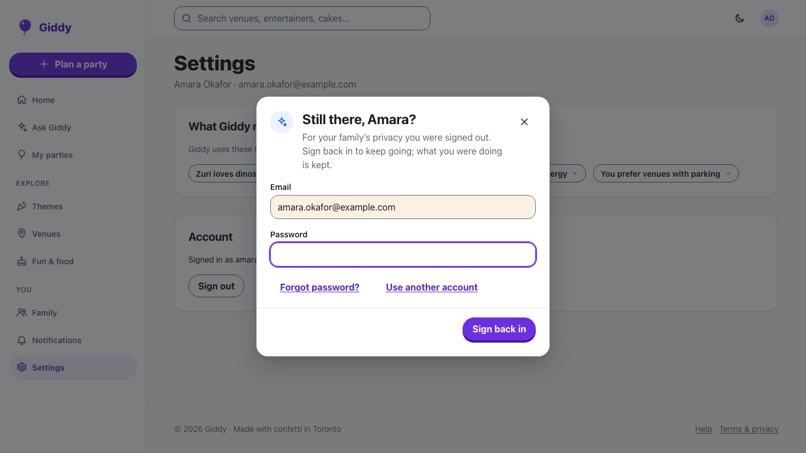

Giddy · Video 13
Sign up and set up the family
Safe accounts, and the kids Giddy plans for
Safe accounts, and the kids Giddy plans for
Check your email; the link confirms and signs in; family setup with up to 5 interests.
One message for a wrong password; the email stays; back to the page she asked for.


Sign-up rules, links, sign-in pause, cookies, sessions, new devices, rate limits, CSRF, resets, Google and Apple, children, nudges.
Every account page and dialog, family setup, the expired session that keeps a half-added guest, axe at 360 and 1280 px.
Next: manage plans and notifications